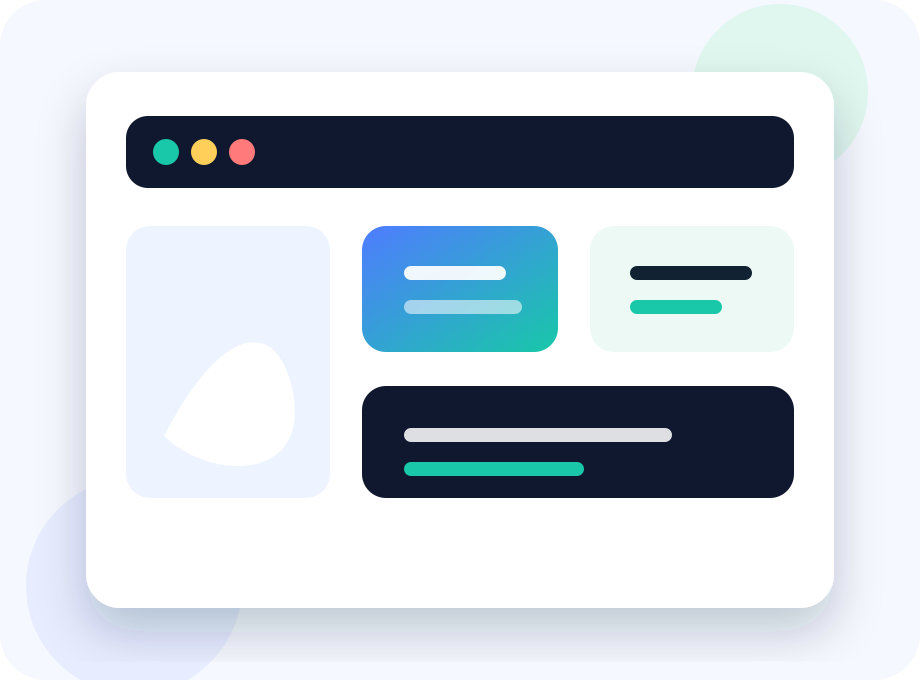

WordPress Website Design
Conversion-minded design systems that make your brand feel clear, credible, and easy to act on.
Explore servicePremium WordPress agency partner
NolanWP helps business owners plan, build, maintain, improve, and automate WordPress websites without burying the work in technical fog.

What we handle
Design, development, support, fixes, hosting guidance, WooCommerce, SEO, analytics, performance, chatbots, and automation.
Conversion-minded design systems that make your brand feel clear, credible, and easy to act on.
Explore serviceCustom classic theme builds, plugin-aware integrations, clean templates, and maintainable code.
Explore serviceUpdates, monitoring, backups, content support, and practical care plans for growing sites.
Explore serviceFocused troubleshooting for layout issues, broken forms, slow pages, errors, and launch blockers.
Fix my siteStorefront improvements, checkout clarity, product flows, reporting, and operational support.
Explore serviceTechnical SEO, tracking plans, chatbot integrations, automation, and performance optimization.
Explore serviceWordPress expertise
We think through editing flows, plugin behavior, performance budgets, conversion paths, tracking, support handoff, and what your team needs after launch.
Process
We define what the site needs to do before discussing design details.
Pages, CTAs, tracking, content, support, and technical risks are clarified early.
You see progress in plain language and can make decisions without guesswork.
Selected work
New quote flow, faster service pages, cleaner tracking, and a care plan for weekly content updates.
WooCommerce checkout review, product page polish, analytics events, and performance cleanup.
Authority-focused redesign with clearer service hierarchy, resources, and lead routing.
Support and AI
From emergency fixes to chatbot intake, content automation, tracking cleanup, and performance reviews, we help your site stay useful after launch.
Compare ServicesNolanWP translated a messy wish list into a site our team can actually manage.
Fictional client, operations director
FAQ
Yes. We can improve, repair, maintain, redesign, or rebuild depending on what the current site needs.
Yes. Support and maintenance are core services, including updates, monitoring, content help, and ongoing improvements.
Yes. We plan clean tracking, form routing, CRM handoffs, chatbot intake, and practical automation workflows.